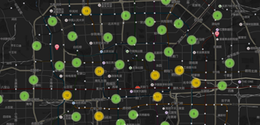
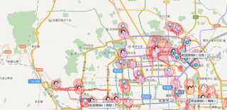
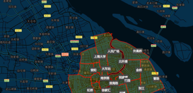
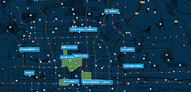
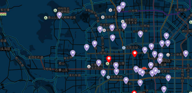

20000+团队在使用
20000+团队借助地图无忧
大幅提升工作效率
银行网点分布管理
将Excel表格存储的银行名称、电话、地址等批量上传至地图无忧平台，快速生成网点分布 专题图。自定义工商银行的Logo作为图标，结合聚合渲染等可视化效果，更清晰的呈现银行网点 的分布态势。
查看案例配送路线智能规划
通过Excel表上传需要配送的订单信息，将订单位置分布展现出来。设置配送路线的起点和终点， 选择需要配送的订单，通过智能路径模块自动计算订单配送的先后顺序和路径，规避折返绕路、 装车顺序不对等问题，提高效率，降低成本。使用手机端，可以同步收到配送路线和订单信息，更便于 任务安排。
查看案例订单自动分拣
基于地图无忧平台划分公司的配送片区，使用分单模块，直接输入订单地址就能知道应该分配至哪个 区域去。如果线下有大量的订单信息，也可以通过Excel直接上传进行批量订单分拣。
查看案例户外广告牌分布图
户外广告牌分布图展示了某广告公司户广告牌的位置、尺寸、类型、商圈、价格、照片等详细信息， 可以实时通过电脑、手机、实时查询展示给客户，内部也可以对信息进行可视化的编辑管理。
查看案例烟草专卖局监管示例
将零售商户数据进行地图可视化，实现零售商户的可视化管理，包含分布、到期时间、抽查结果，持证状态等。 查到违法案件时，直接在地图上添加，分类显示各类违法案件的分布趋势和具体案情。整个管辖片区的监管督查情况 一目了然。
查看案例